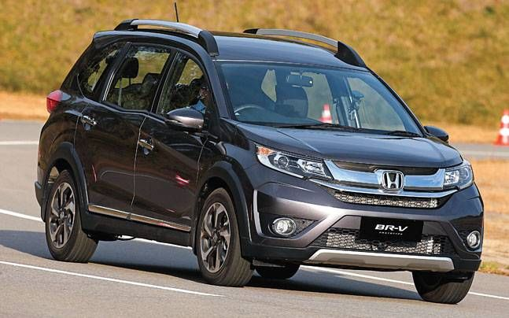

CROSSOVER
A crossover SUV (CSUV) – also called a crossover utility vehicle (CUV) – is a type of sport utility vehicle (SUV) of unibody construction. Crossovers are often based on a platform shared with a passenger car. Compared to truck-based SUVs, they typically have better interior comfort, a more comfortable ride, superior fuel economy, and less off-road capability. Many crossovers lack all-wheel drive, which, in combination with their lesser off-road capability, challenges their definition as "sports utility vehicles". Furthermore, there are inconsistencies about whether some vehicles are considered crossovers or SUVs; therefore, the term "SUV" is often used as a catch-all for both crossovers and compact SUVs. Crossovers may be sometimes also classified as light trucks in some countries, even though they are smaller than their bigger counterparts.
In the United States as of 2006, crossover models comprised more than 50% of the overall SUV market.Crossovers have become increasingly popular in Europe also since the early 2010s.
Forerunners of the modern crossover include the 1977 Matra Rancho and the AMC Eagle introduced in 1979.
